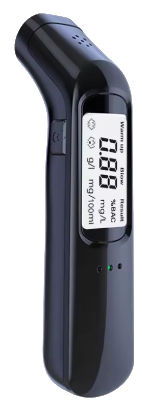

Permis à Points en 2025 en France
Préservez votre permis ! Découvrez tout ce qu'il faut savoir sur le permis à points : fonctionnement, sanctions et astuces pratiques pour éviter les pièges. Roulez serein !
Fonctionnement et Capital
Le permis à points repose sur un système incitatif : un capital de points attribué dès l'obtention du permis, qui diminue en cas d'infraction et se reconstitue progressivement.
üîπ Capital initial de points
- Permis (voiture, moto, poids lourd) : 12 points maximum.
- Période probatoire : Démarrage à 6 points, avec progression vers 12 points sous réserve de ne pas commettre d'infraction (3 ans pour la formation traditionnelle, 2 ans pour la conduite accompagnée).
üîπ Reconstitution progressive
-
Formation traditionnelle :
- Après 1 an sans infraction : +2 points (8 points au total)
- Après 2 ans : +2 points (10 points au total)
- Après 3 ans : +2 points (12 points au total)
-
Conduite accompagnée :
- Après 1 an sans infraction : +3 points (9 points au total)
- Après 2 ans : +3 points (12 points au total)
F.A.Q
R : Non, une infraction mineure (ex. : excès de vitesse < 20 km/h) ne retire qu’1 point. Tu gardes les autres. Par contre, la progression vers 12 points est interrompue pendant 3 ans à partir de cette infraction.
R : Oui, si tu n’as commis aucune infraction pendant 2 ans, ton solde revient automatiquement à 12 points.
Infractions et Perte de Points
Les infractions relevées par les contrôles, radars ou vidéo-verbalisation entraînent un retrait de points.
üîπ Retraits par infraction
- Retrait de 1 à 6 points selon la gravité.
- Maximum de 8 points retirés en cas de cumul d'infractions.
üîπ Bar√®me des retraits
| Infraction | Retrait de points |
|---|---|
| Excès de vitesse < 20 km/h | 1 point |
| Excès de vitesse 20-29 km/h | 2 points |
| Excès de vitesse 30-39 km/h | 3 points |
| Excès de vitesse 40-49 km/h | 4 points + suspension |
| Excès de vitesse > 50 km/h | 6 points + suspension |
| Téléphone en main au volant | 3 points |
| Non-respect d'un feu rouge ou stop | 4 points |
| Non-port de la ceinture | 3 points |
| Refus de priorité piéton | 6 points |
| Conduite sous alcool (0,5 à 0,8 g/L) | 6 points + suspension/annulation |
| Conduite sous stupéfiants | 6 points + suspension/annulation |
| Dépassement dangereux | 3 points |
F.A.Q
R : Le non-respect d’un feu rouge coûte 4 points, et l’usage du téléphone 3 points. Tu peux donc perdre 7 points d’un coup.
R : Si la marge technique est appliquée (5 km/h en dessous de 100 km/h), aucune infraction ne sera retenue. Donc aucun point perdu.
Montants des Amendes et Délais de Paiement
| Classe | Type | Montant minoré | Montant forfaitaire | Montant majoré |
|---|---|---|---|---|
| 1ère classe | Stationnement | 11 € | 17 € | 33 € |
| 2ème classe | Clignotants, Assurances, Péages | 22 € | 35 € | 75 € |
| 3ème classe | Excès de vitesse < 20 km/h, Problèmes de freins | 45 € | 68 € | 180 € |
| 4ème classe | Toutes autres infractions | 90 € | 135 € | 375 € |
| 5ème classe | Excès de vitesse > 50 km/h | N/A | Décision du tribunal | N/A |
Délais de paiement : minoré sous 15 jours (30 jours en ligne), forfaitaire entre 16 et 45 jours et majoré après 60 jours.
F.A.Q
R : Oui, en payant dans les 15 jours, tu bénéficies du tarif minoré : soit 90 € au lieu de 135 €.
R : Si tu dépasses le délai de 45 jours, tu passes au montant majoré : par exemple, une amende de 135 € devient 375 €.
Contestations et Stratégies
Contester une infraction permet de retarder le retrait effectif des points, laissant le temps de suivre un stage de récupération.
üîπ D√©lais pour contester
- 45 jours pour contester une infraction après réception de l'avis.
- 30 jours pour contester une amende majorée.
üîπ Strat√©gies efficaces
- Suivre un stage de récupération pour regagner jusqu'à 4 points.
- Adopter une conduite exemplaire afin de récupérer naturellement des points sur 3 ans.
- Contester permet parfois de gagner entre 4 et 6 mois avant que le retrait ne soit effectif.
F.A.Q
R : Tu peux désigner le véritable conducteur via le formulaire joint à l’amende (ou en ligne si c’est une entreprise), et éviter de perdre les points.
R : Non. Tant qu’un jugement n’est pas rendu, les points ne sont pas retirés.
Perte Totale du Permis et Annulation
Si votre solde de points atteint zéro, votre permis est annulé. La procédure de récupération nécessite alors plusieurs démarches administratives.
üîπ Proc√©dure en cas d'annulation
- Restitution du permis dans les 10 jours suivant la réception de la lettre 48SI.
- Envoi des documents requis : copie de la lettre 48SI, permis original, pièce d’identité, justificatif de domicile et enveloppe affranchie.
- Réception d’un récépissé qui lance la procédure de récupération.
üîπ R√©cup√©ration apr√®s annulation
- Délai d’attente : 6 mois minimum en cas de première annulation, 1 an minimum en cas de récidive.
- Examen médical et tests psychotechniques obligatoires.
- Repassage du code et/ou de la conduite selon la durée de l’annulation.
F.A.Q
R : Tu dois restituer ton permis sous 10 jours à la préfecture. Tu ne peux plus conduire et dois attendre 6 mois avant de repasser les épreuves.
R : Si ton permis avait moins de 3 ans, tu devras repasser code + conduite. Si ton permis avait plus de 3 ans, seul le code est requis.
Récupération Automatique des Points
En cas d'absence d'infraction, votre capital se reconstitue automatiquement.
üîπ M√©canismes de r√©cup√©ration
- Récupération d'1 point en 6 mois pour une infraction légère.
- Récupération totale après 2 ans sans infraction (pour les infractions de 1ère à 3ème classe).
- Récupération totale après 3 ans sans infraction (pour les infractions de 4ème à 5ème classe).
- Attention : chaque nouvelle infraction remet à zéro la progression de récupération.
F.A.Q
R : Oui, selon ton historique :
- 2 ans sans infraction = retour à 12 pour les contraventions
légères
- 3 ans = retour à 12 pour les infractions plus graves (4e ou
5e classe)
R : Oui, 1 seul point perdu se récupère automatiquement après 6 mois sans nouvelle infraction.
Solde de Points
Consultez régulièrement votre solde afin d'anticiper toute sanction et d'agir en conséquence.
Vérifier mon soldeF.A.Q
R : Connecte-toi sur mespoints.permisdeconduire.gouv.fr avec ton numéro de dossier NEPH. Tu y verras ton solde et l’historique des infractions.
R : Si ton adresse n’est pas à jour, tu risques de ne pas recevoir les courriers (comme la lettre 48SI). Il est donc essentiel de la mettre à jour rapidement auprès de l’ANTS.
R : Non. Un stage permet de récupérer 4 points maximum, une fois par an.
R : Non. Le stage est réservé à ceux ayant perdu des points. Sauf si tu reçois une lettre 48N, où le stage devient obligatoire (en cas d’infraction grave pendant la période probatoire).
Informations Complémentaires
üîπ Taux l√©gaux
| Substance | Taux légal |
|---|---|
| Alcool (conducteurs expérimentés) | 0,5 g/L |
| Alcool (nouveaux conducteurs) | 0,2 g/L |
| THC (cannabis) | Aucune tolérance |
| Autres stupéfiants | Dépistage positif = infraction |
üö¶ Importance de rouler en r√®gle
Adopter une conduite responsable, c'est avant tout respecter les règles et prendre soin de son véhicule. Voici quelques conseils pratiques pour rouler en toute sécurité :
üîπ Respecter le Code de la route
- Vitesse et signalisation : Adaptez votre vitesse aux conditions de circulation et respectez les limitations en vigueur. Soyez attentif aux feux, panneaux et marquages.
- Priorités : Respectez les règles de priorité, notamment aux intersections et passages piétons.
üîπ Entretenir votre v√©hicule
- Contrôle technique et révisions : Assurez-vous que votre véhicule est régulièrement entretenu (vidange, freins, pneus, éclairage…) et que le contrôle technique est à jour.
- Vérifications quotidiennes : Avant de prendre la route, vérifiez rapidement le niveau d’huile, la pression des pneus et le bon fonctionnement des feux.
üîπ Pr√©venir les risques
- Distance de sécurité : Gardez une distance suffisante avec le véhicule qui vous précède pour pouvoir réagir en cas de freinage brusque.
- Anticipation : Restez vigilant aux comportements des autres usagers et anticipez les situations dangereuses.
- Conditions météo : Adaptez votre conduite en cas de pluie, verglas ou brouillard en réduisant la vitesse et en augmentant votre vigilance.
üîπ Conduite responsable
- Sans distraction : Évitez d'utiliser votre téléphone au volant et privilégiez les dispositifs mains libres si nécessaire.
- Alcool et stupéfiants : Ne conduisez jamais sous l’influence de l’alcool ou de substances illicites, même en faible quantité.
- Ceinture de sécurité : Portez toujours votre ceinture et assurez-vous que tous les passagers en fassent autant.
üîπ Mises √† jour administratives et pr√©ventives
- Documents obligatoires : Vérifiez régulièrement que votre assurance, carte grise et contrôle technique sont à jour.
- Stages de récupération : Informez-vous sur les stages de récupération de points pour améliorer votre conduite en cas de perte de points.
üîπ Sources officielles
Éthylotest Électronique Homologué
Assurez votre sécurité avec cet éthylotest homologué, indispensable pour vérifier votre taux d'alcoolémie avant de prendre la route.
Voir la fiche produitConclusion
Le permis à points est un outil essentiel pour responsabiliser les conducteurs. Une bonne gestion de son capital, la contestation judicieuse et l'adoption d'une conduite exemplaire sont les clés pour préserver votre permis.
Un permis bien géré est un permis préservé !
Contact
Pour toute question ou information complémentaire, consultez les sites officiels suivants : Service-Public.fr, ANTAI ou Sécurité Routière.
Vous pouvez également nous contacter par email à l'adresse suivante : contact@permisapoint.info